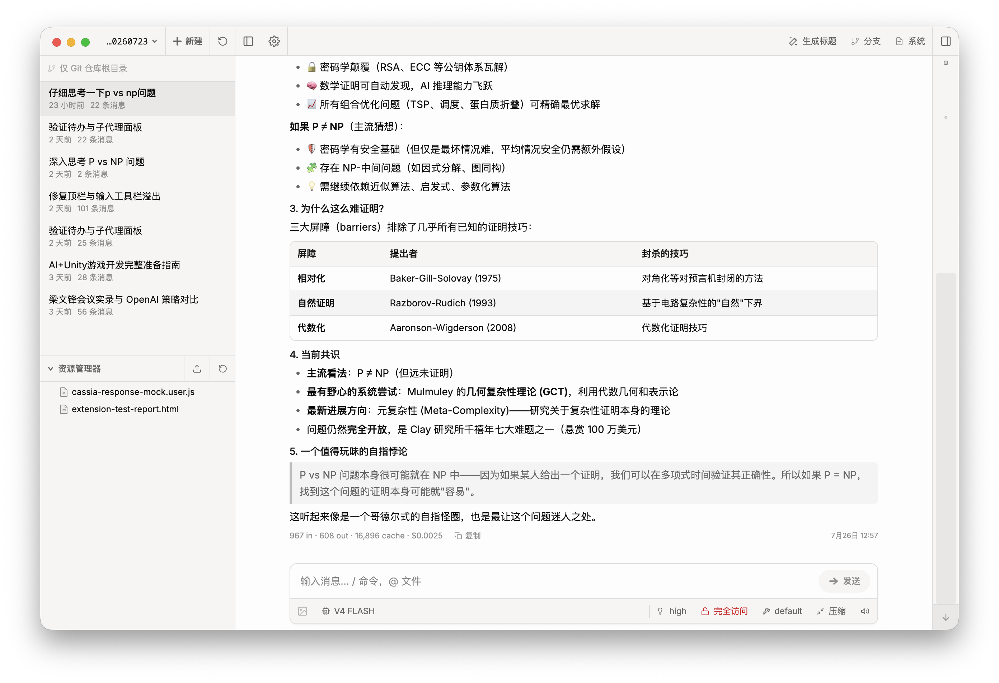
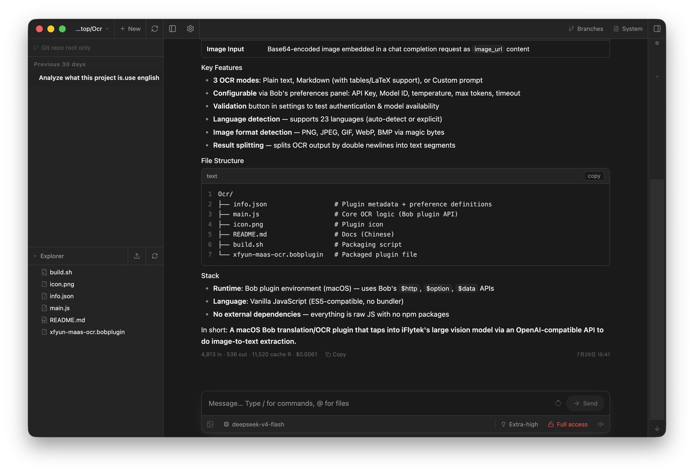

Local-first agent workspace
Chat, files, Git, and terminals
in one quiet workspace.
Pi Web is a coding-agent workspace for your own machine. Open a project, chat with the agent, review Git changes, browse files, and open terminals — in the browser or as a desktop app.
Node ≥ 22.19
MIT
Web + Electron
REST + SSE
English / 中文


Desktop app
Download
Free & open source (MIT). Prefer the browser? Run the web version from source below. All releases →
Highlights
Everything in one place
Agent chat
Streaming replies, tool calls & results, thinking, context & cost, compaction.
Session hub
Project-grouped history, rename / delete / export HTML, fork & in-session branches.
Git review
Status, stage / discard, commit & push, branch create, AI commit messages.
Worktrees
Switch, create, and remove Git worktrees straight from the sidebar.
Terminals
Multi-tab PTY shells (xterm + node-pty) rooted at the project cwd.
Files
Explorer, fuzzy index, preview for source / Markdown / images / PDF / DOCX.
Models & auth
Providers, OAuth / API keys, models.json editor, model smoke tests.
Skills
List, search, install, update, enable / disable agent skills.
Permissions
Ask / full mode switched right from the input bar.
Settings
Theme, language, utility models for titles & commits, update check.
i18n & polish
English / 中文, light / dark, chat minimap, shortcuts, completion sound.
Desktop
Electron shell with native window controls; macOS DMG & Windows NSIS builds.
Layout
Three panes, zero noise
Projects & sessions
tree, search, worktrees
Chat + tools
model · permissions · streaming
Review workspace
Git · files · terminals
Run from source
Up in under a minute
git clone https://github.com/ct-jyjntc/pi-web.git
cd pi-web
npm install
npm run dev # http://127.0.0.1:30141
cd pi-web
npm install
npm run dev # http://127.0.0.1:30141
npm run build && npm run start
npm run electron:dev
npm run dist:dmg / dist:win
No login. The server binds to
127.0.0.1 by default.
Binding outside loopback exposes a high-privilege agent surface — only do that on a network you trust.
Architecture
How it is wired
Browser / Electron
→
Next.js API
→
In-process agent runtime
→
~/.pi/agent
→
Git · PTY · files
The client talks to the Next.js server over REST + SSE. Session browsing reads the
local .jsonl files directly; sending a message starts an in-process
AgentSession that streams events back over SSE.
Local data
Your data stays on your machine
~/.pi/agentDefault data root (PI_CODING_AGENT_DIR overrides)…/sessions/…/*.jsonlConversation history, one file per session…/models.jsonModel / provider config, also editable in the UI
File browsing is scoped to session cwds, project roots, ~/pi-cwd-*,
and explicitly allowed roots.